"
CC 也好，Codex 也罢，这种工具，关键不在它多强，在不在你最顺手的地方。
—— 飞书 Bridge
大家好啊，我是甲木，
出差回来之后，这几天在家，终于可以静下心来玩玩 AI 了，更新的频率也可以稍稍加快一些。
这几天的状态，就是各种逛一逛 GitHub、逛 X、逛各种群，看看最近又有什么新东西冒出来。
还真淘到了一个不错的 GitHub 项目，分享给大家~
feishu-claude-code-bridge
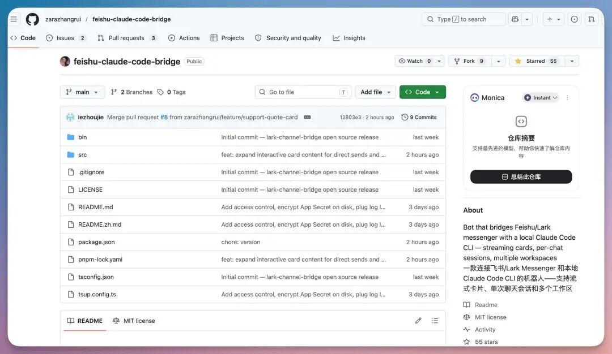
这是项目有何用？
一句话讲清楚：这玩意儿是个能把本地 Claude Code 桥接到飞书 / Lark 的开源 Bridge 项目，让 Claude Code 成为飞书里的一个 Bot。
之前我就一直觉得，CC 这种东西，关在终端里有点可惜，虽然也有各种 GUI 化的 CC，但始终跟工作场景结合不起来。
我日常用飞书办公，所有同事、所有项目、所有协作都在飞书里跑。
我特别希望 Claude Code 能像我工位上的一个同事一样住进来。能 @ 它，能拉它进群，能合并转发消息给它，能跟它划词评论。
这个开源 Bridge 项目就是为了解决这事的。
接下来给大家分享下怎么接，然后讲我自己用得最爽的几个场景。
DEPLOY
部署部分我不展开。
README 已经写得很清楚，我这里只说骨架。
终端跑一句：
$ bash
npx -y lark-channel-bridge@latest start
完事。
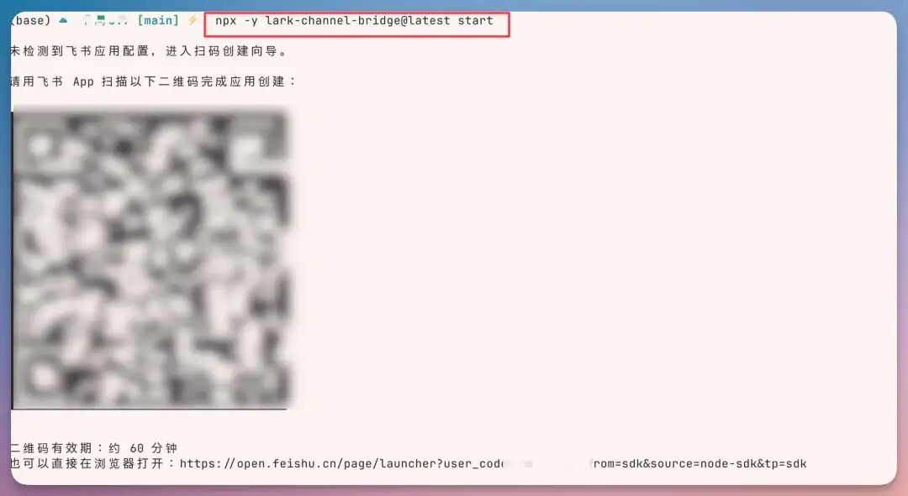
对，就这样。
如果再配合 Lark CLI 一起用，体验会更顺手。
第一次跑，它会弹出一个框，然后直接用我们的「飞书」扫码授权即可。
— 按步骤一路创建即可
之后，直接创建成功，自动获取。
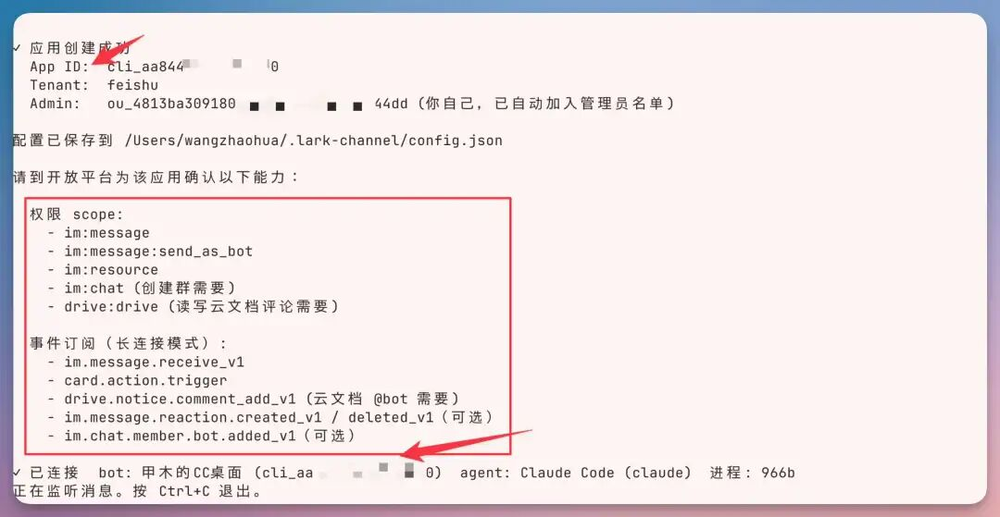
— 扫码直接创建成功
当然，它只是创作了应用程序外壳，还是需要我们在 Lark 开发者控制台（自行查找吧..）上确认上边这些权限是否开启 ↑
— 这里是权限 scope 的配置界面
之后的「事件管理」也需要开启一下↑面的权限。
— 这里是事件管理
启用之后，再次 lark-channel-bridge start，看到 ✓ 已连接 就可以在飞书里找 bot 对话了。
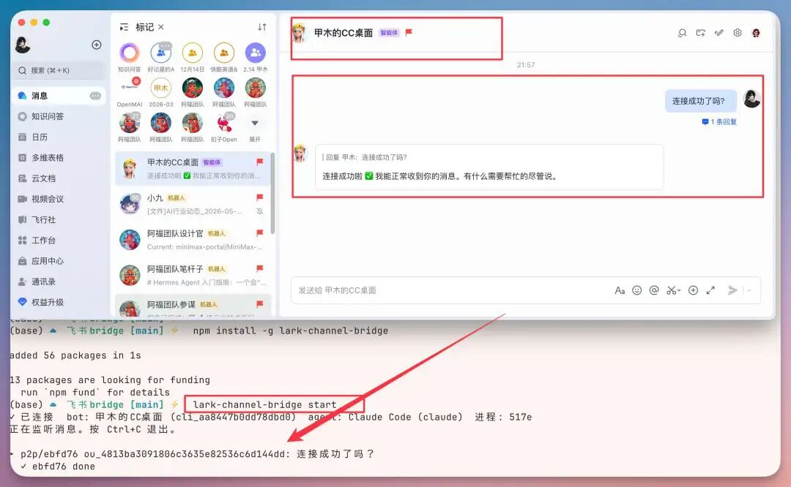
遇到问题直接发 /doctor，让 Claude Code 自己帮你诊断。
这一步设计得挺贴心。
跑起来之后，Claude Code 就以一个 Bot 的形态住进你的飞书里。
当然，lark-channel-bridge 这份命令速查表也送给各位小伙伴了~
— 命令速查
下面才是有意思的部分。
GO MOBILE
我前两天在搞一个叫「一念江湖」的小项目，一个网页端的小玩意儿。
周四下午，出门吃饭路上，突然想到一个改动。
某个交互流程，其实可以再简化两步。放以前，我大概率是这么个流程：强忍着先吃完饭，回家打开电脑，找回上下文，写 prompt，等 Claude Code 干活。
等真正进入状态，半个下午没了。
现在的流程是这样：
— 飞书操作 CC 改项目
吃饭路上掏出手机，打开飞书，找到那个项目对应的群，@ 一下 Claude Code。
把想法说出来。
可以打字，可以语音，可以截个图发过去。
Claude Code 在我家里那台电脑上默默把活干完，结果直接发回飞书。
我饭还没吃完，它已经做了一版。
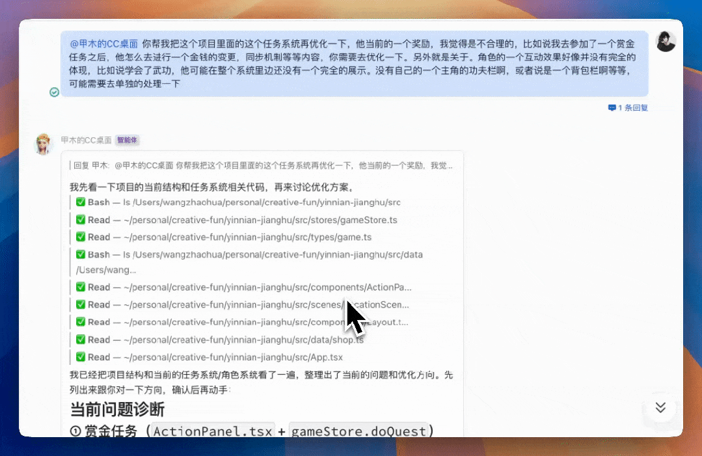
「一念江湖 · 实操 GIF」
回家之后打开流程，给大家看看，所有操作可视化，这个体验太爽了。
配合 Mac 上的 Amphetamine，让电脑合盖也不休眠，整个事就闭环了。
电脑放在家里 always on，人在哪儿都能让它干活。
散步聊天、地铁里聊天、躺在床上聊天，都行。
ONE CHAT, ONE PROJECT
通过刚才的例子，相信大家也看到了，能够直接创建群，这个设计非常有意思。
之前用 Claude Code 最难受的一点，是 session 管理。
一个 terminal tab 一个 session，开多了完全找不到。
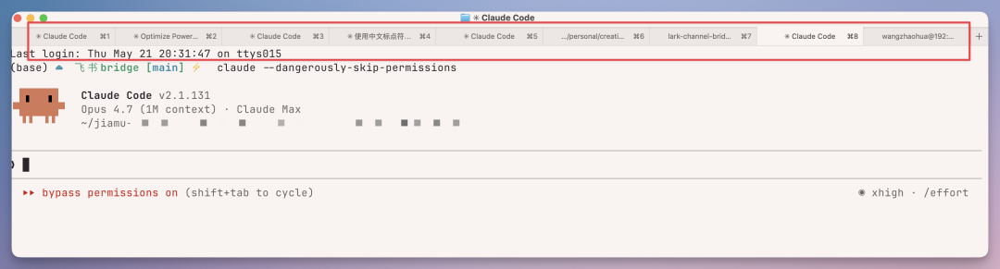
「我那个改首页的 session 是开在哪个 tab 来着？」
鼠标在十几个 tab 之间扫，扫不到就放弃，重开一个。
上下文全没了。
接进飞书之后，整套逻辑变成这样：
GROUP
一个群 = 一个项目
cwd 锁在这个项目目录
TOPIC
一个话题 = 一个 session
普通群里就是 thread
直接复用了飞书的群组织结构。
你想新开一个项目？
发 /new chat 一念江湖，Claude Code 自动给你拉一个群，把你和 bot 都放进去，cwd 自动切好。
— 直接创建项目群
你都不用手动建群。
切回旧 session 用 /resume，列表卡片把最近几个会话列出来，点一下就续上。
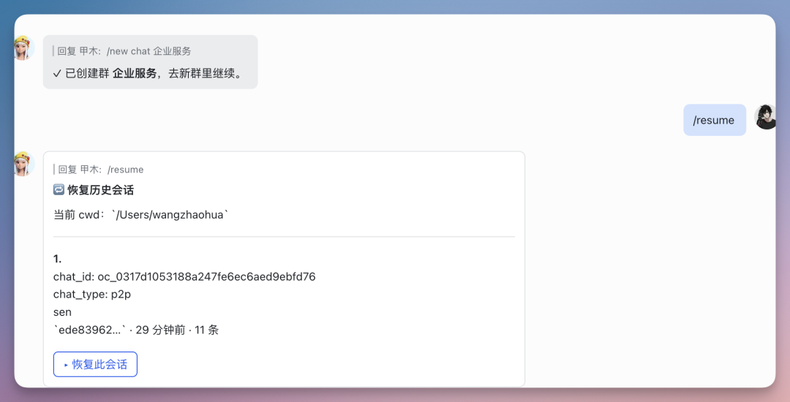
我现在的飞书里大概有几个跟 Claude Code 的群。
统一打了个标签，侧边栏一键定位。
每个项目一个房间，每个房间里 Claude Code 一直在线。
（这种「项目 = 群」的隐喻，其实跟我自己脑子里组织代码项目的方式是同构的。这是设计上最讨巧的地方。）
HISTORY KEPT
这条对我来说，是被低估的杀手锏。
Claude Code 自己其实不存完整聊天记录。
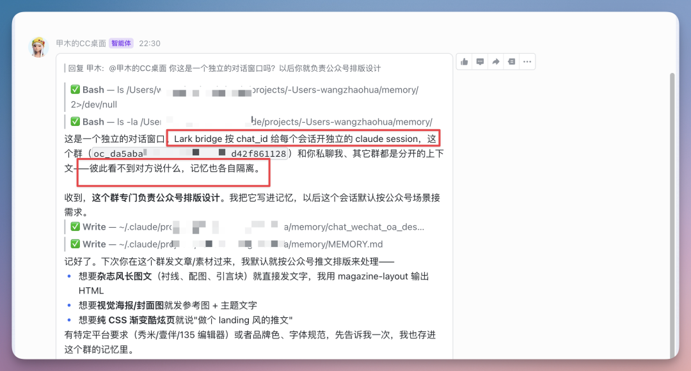
它存的是你的 prompts、是 session 状态，但不是完整对话流。
terminal 一关，你跟它磨了一下午的过程就丢了（虽然有 jsonl 文件，但是又深又有 compact）。
我之前一直觉得这事挺浪费。
因为我跟 Claude Code 的对话里，最有价值的往往不是最终代码。
而是中间那一段 brainstorm。
我怎么把模糊的需求一步步逼出来的、它怎么反问我细节的、我们俩怎么互相推翻又重建的。
那些过程，才是真正的「思考资产」。
接进飞书之后，所有聊天记录天然留在飞书里。
我想回顾上周怎么决定那个交互方案的，搜一下就能翻出来。
我想给朋友分享我跟 Claude Code 的 vibe coding 过程，直接合并转发整段历史。
（我现在挺常做的一件事是：把跟 Claude Code 的一段对话合并转发给另一个朋友，附一句「你看这段我觉得挺有意思的」。这种感觉很像在转发同事的微信记录，但同事这边是 AI。）
DOC NATIVE
我相信很多人在使用 CC 的时候都会遇到这样的情况。
在终端里看 markdown 是反人类的。
Claude Code 给我写一个 PRD spec，几千字下来，表格在 TUI 里渲染成什么样⋯⋯算了不说了。
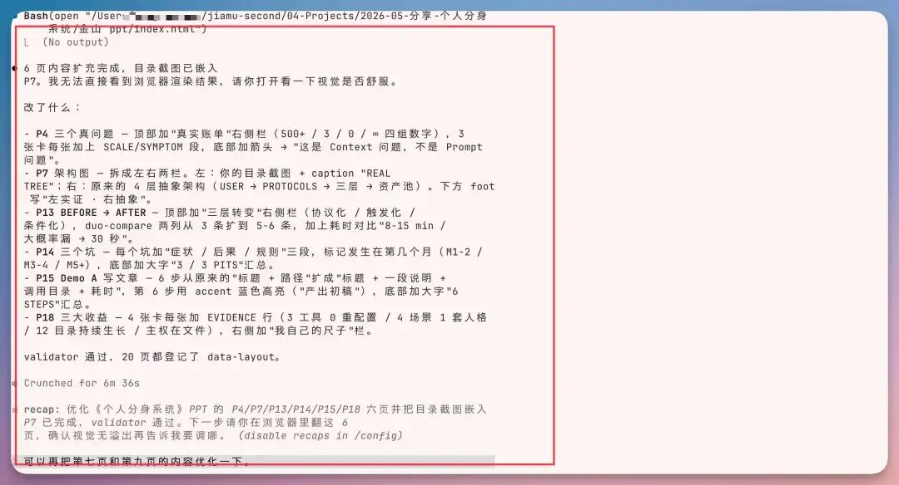
每次我都得在 Cursor 里另开一个窗口去看。
反馈也只能用文字描述：「第三段第二行那个表格里第二列的措辞改一下」。
非常折磨。
接进飞书之后，Claude Code 直接给我写飞书文档。
写完丢一个链接到群里，我点开就是格式正常的飞书文档。
标题层级清晰、表格能交互、图片直接显示。
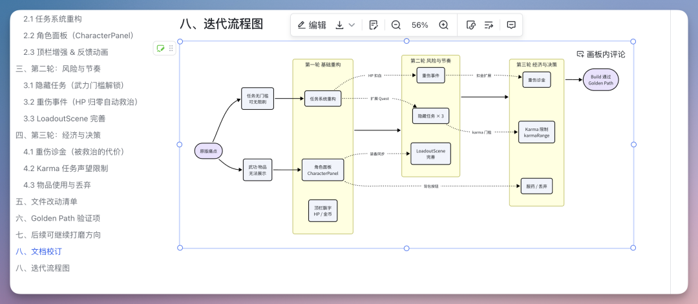
最关键的是反馈方式。
我可以直接划词评论。
划词，写一句「你觉得这里如何？」，提交。
Claude Code 看到评论，自己改。
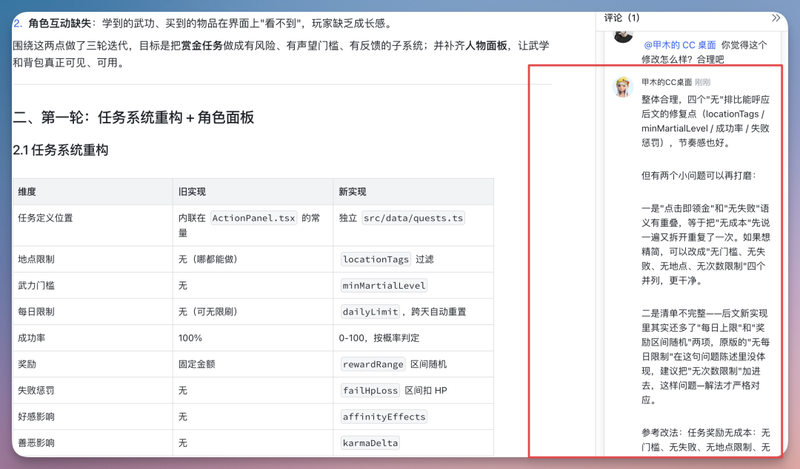
这事一下把「AI 写文档」 这条流水线打通了。
BEFORE
AI 写 → 我读不爽→ 我手动改 → 我贴回去
AFTER
AI 写 → 我划词→ AI 改
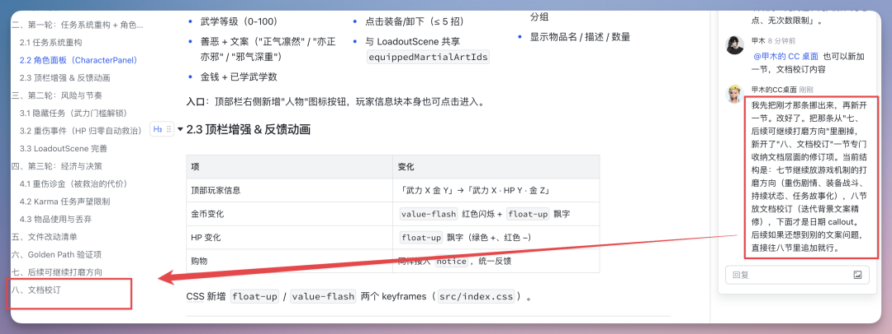
闭环。
ps. 这种用法其实对纯文字工种比对程序员还有用。我有几个做内容的朋友，最近都在用这个搞 specs 协作。
CARD NATIVE
之前 Claude Code 让我做选择题，比如「这个改动有三种方案，你选 1、2 还是 3」。
我得手动敲数字回它。
键盘控制是能选，但你在手机上呢？
在散步路上呢？
接进飞书之后，Claude Code 直接发交互卡片。
一个卡片上摆三个按钮，「方案 A / 方案 B / 方案 C」，我点哪个它就走哪条路径。
不用打字。
这个细节看起来很小，但用过几次就会发现差别很大。
AI 对话里最大的摩擦，其实就是「需要打字的时候不想打字」。
卡片化交互把这个摩擦削掉了。
体感就跟一个真人同事用按钮快速对齐差不多。
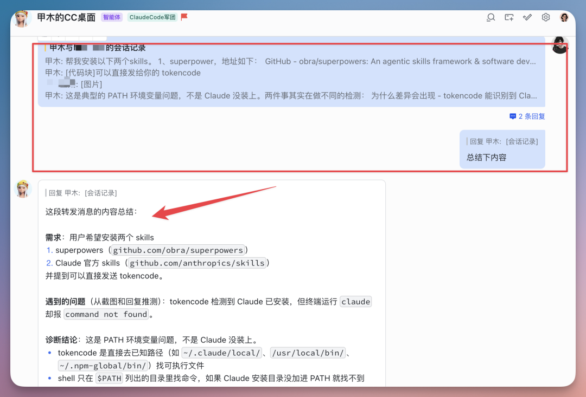
包括消息转发总结等等都可以。
类似的还有富文本。
Claude Code 可以发图文混排消息、可以发表格直接渲染、可以发长图让我直接在飞书里查看。
一旦从「纯文本输出」里解放出来，整个交流密度都提了一档。
NOTES
按官方公告，2026 年 6 月 15 日起，Claude 订阅计划对 claude -p 和 Agent SDK 的使用会独立计费，不再占用原有对话额度。
各档独立月度额度相信大家也都知道，当月不滚存。
这个 Bridge 走的就是 claude -p 模式。
所以重度跑脚本的同学需要提前评估一下用量，可能会更快触顶。
轻度使用基本无感。
这个项目是个人开源的，自部署、自维护，遇到 bug 在 GitHub 上提 issue 或 PR。
我觉得这种开发者自驱的项目才是 AI 生态最有意思的部分。
一个真实用户感受到痛点，自己把它解了，再开源出来给所有人用。
如果你日常用的是 Codex 而不是 Claude Code，社区也有几个 Bridge 可以参考：
▸ kxn/codex-remote-feishu
▸ guyue010/public-codex-skills
ENDING
我玩这个 Bridge 玩了两天，最想说的一句话其实是：
CC 也好，Codex 也罢，
这种工具，关键不在它多强，
在在不在你最顺手的地方。
对我来说，那个地方就是飞书。
打开就是它，散步也是它，开会聊到一半发现要改个东西，直接合并转发给它就行。
它没变得更聪明。
但它变得更近了。
这种「近」，比某次模型升级带来的智商提升对我更有价值。
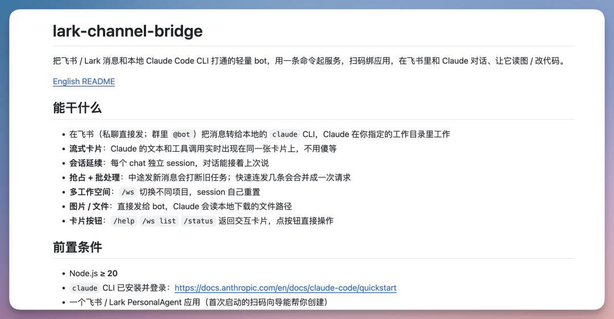
📌 项目
zarazhangrui/feishu-claude-code-bridge
README 里有完整教程。
有想法或反馈的话直接在 GitHub 提 issue / PR，作者很欢迎。
以上。
我是甲木，热衷于分享一些 AI 干货内容，同时也会分享 AI 在各行业的落地应用。
如果你觉得今天这篇有收获，欢迎点赞、在看、转发三连，我们下期再见 👋🏻